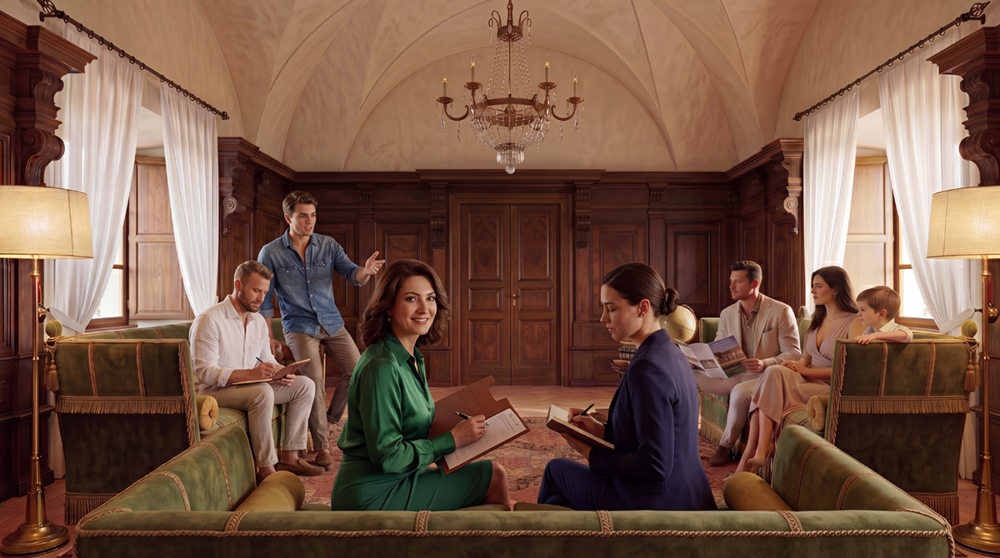
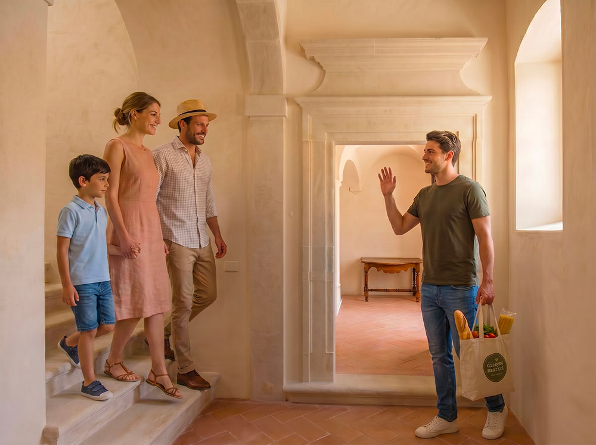

Entrare a far parte del Baglio San Michele non è un semplice acquisto immobiliare. È una scelta di vita che richiede tempo, conoscenza reciproca e allineamento profondo di valori. Per questo motivo abbiamo strutturato un percorso di ingresso chiaro e graduale, pensato per permettere a entrambe le parti di valutare con serietà e rispetto la possibilità di camminare insieme.
Il processo è reciproco: non solo il Baglio valuta i candidati, ma anche chi desidera entrare ha modo di conoscere il luogo, le persone e lo stile di vita prima di prendere una decisione definitiva.
Le fasi del percorso di ingresso

Candidatura
Il percorso inizia con l’invio di una candidatura attraverso il modulo presente sul sito. Si richiede di compilare con attenzione il form, allegando una lettera motivazionale e, se possibile, un breve curriculum o descrizione delle proprie competenze e del proprio nucleo familiare.
Colloquio conoscitivo
I candidati selezionati vengono invitati a un colloquio (in presenza o online) con uno o più membri del gruppo promotore. Questo incontro serve a conoscersi reciprocamente, approfondire le motivazioni, chiarire dubbi e verificare l’allineamento con i principi del progetto.
Visita residenziale
Dopo il colloquio, i candidati vengono invitati a trascorrere alcuni giorni al Baglio. Questo momento è fondamentale per vivere direttamente l’atmosfera del luogo, conoscere gli altri residenti (quando presenti) e farsi un’idea concreta della vita comunitaria e del territorio.
Periodo di prova
In caso di reciproco interesse, si procede con un periodo di prova della durata variabile (generalmente alcuni mesi). Durante questa fase il nucleo familiare vive stabilmente al Baglio, partecipando alla vita comunitaria e contribuendo, secondo le proprie possibilità, alle attività del luogo. È un momento di conoscenza profonda e di verifica concreta dell’integrazione.
Ingresso formale
Al termine del periodo di prova, se entrambe le parti confermano la volontà di proseguire insieme, si procede con l’ingresso formale. Viene sottoscritto un accordo che regola l’assegnazione dell’unità abitativa, i diritti e i doveri del nucleo familiare all’interno della comunità.
I principi del nostro percorso

Reciprocità
Il Baglio valuta i candidati così come i candidati valutano il Baglio. Entrambe le parti devono sentirsi libere e motivate a camminare insieme.
Trasparenza
Cerchiamo di essere il più chiari possibile fin dall’inizio sui principi, le regole e le aspettative del progetto.
Gradualità
Il percorso è strutturato in fasi progressive proprio per permettere a tutti di maturare una decisione consapevole e serena.
Rispetto del tempo
Non ci sono scadenze forzate. Crediamo che una scelta così importante meriti il tempo necessario per essere ponderata.
Sei interessato a intraprendere questo percorso?
Se senti che il Baglio San Michele potrebbe essere il luogo giusto per te e la tua famiglia, ti invitiamo a iniziare il percorso inviando la tua candidatura.